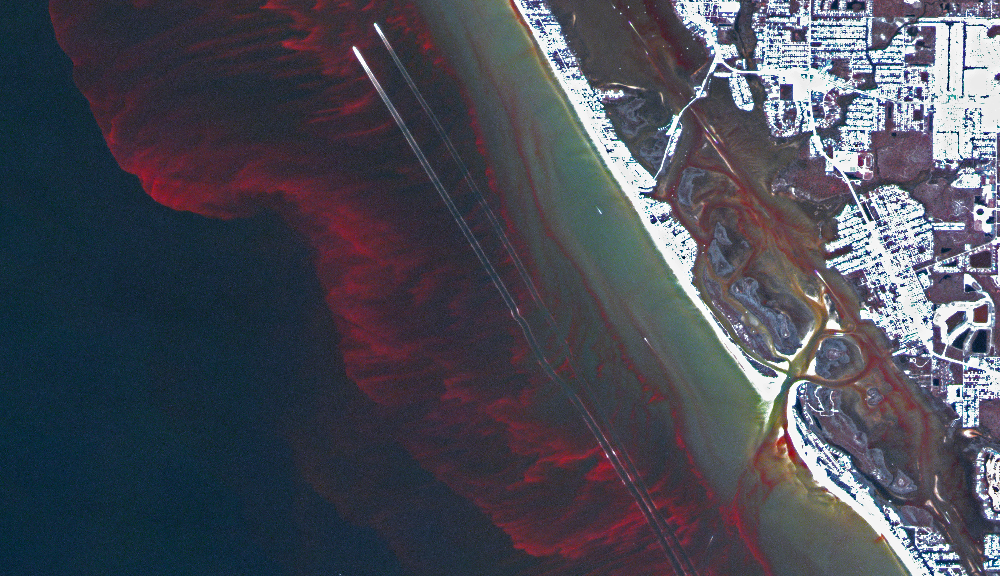

Red tides#
Machine learning framework for red tide bloom severity classification in Charlotte Harbor, West Florida Shelf#
Final Report for Task 9 of Water Quality Evaluation for Peace River Basin and Greater Charlotte Harbor Watershed in Southwest Florida, Florida Department of Environmental Protection (August 2023 – November 2025)
Author: Ahmed S. Elshall (aelshall@fgcu.edu)
Full report can be downloaded aspdf or word
Abstract: This study developed a machine learning framework to predict Karenia brevis red tide bloom severity along the southwest coast of Florida, specifically in Charlotte Harbor. We employed a Random Forest Classifier using weekly environmental data (1992–2024), including river discharge, nutrient loading (TN and TP), wind speed and direction, water temperature, salinity, and sea surface height anomalies. The model achieved high predictive performance, demonstrating a balanced accuracy of 0.887, precision of 0.90, and recall of 0.81 for bloom events. Karenia brevis cell counts, and their lagged values were the most significant predictors, followed by river discharge and nutrient inputs, confirming their critical role in bloom dynamics. The model exhibited slight overfitting, indicated by high training accuracy compared to validation accuracy, suggesting opportunities for further model optimization. Partial dependence and feature importance analyses highlighted nutrient loading and river discharge as primary drivers influencing bloom probability, consistent with ecological expectations. Operational forecasts with a 1-week horizon are recommended for practical management, with weekly updates and periodic retraining to maintain predictive reliability.

Image Credit: NASA Earth Observatory